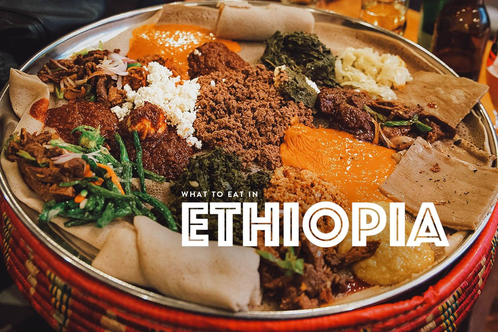

Injera!

Injera is a bread like kind of food,that is only found in Ethiopia.
key_wot
shiro
dinich
kitfo
first we will bake the injera like bread.
then different kinds of "wot" are cooked.
finally place the different wot´s around the injera